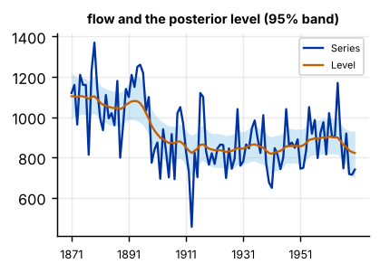
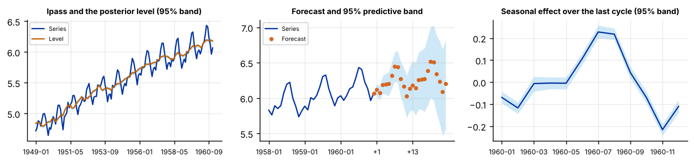

Run this model on your own data in Open Econometric Systems →
Step 1The question and the model
What is the flow of the Nile now, behind the year-to-year noise, and how sure are we? Annual flow at Aswan jumps around from year to year because of rainfall, but there is also a slowly moving level (the drop around 1898 that the change-point guide found). A structural time-series model separates the two. The simplest, the local level model, is
The level \(\mu_t\) is a random walk that is seen through noise. The ratio \(\sigma_\eta / \sigma_\varepsilon\) (the signal-to-noise ratio) decides how fast the level may move: small means that the level is nearly constant and each year's flow is mostly noise. Two components can be added:
- a slope: \(\mu_{t+1} = \mu_t + \delta_t + \eta_t\), \(\delta_{t+1} = \delta_t + \zeta_t\), the local linear trend, for a series that grows;
- a seasonal pattern of period \(s\) (12 for monthly data): \(\gamma_t + \gamma_{t-1} + \dots + \gamma_{t-s+1} = \omega_t\), so that the effects sum to about zero over a cycle and may evolve.
Each component has its own variance. In the Bayesian version all the states and all the variances have a joint posterior. The engine draws all states at once from their exact Gaussian conditional distribution (the precision matrix is banded, so a banded Cholesky factorisation does it in milliseconds; Chan and Jeliazkov 2009), then draws each variance from an inverse gamma, so that there is no Kalman-filter loop and no tuning. Observations that are missing are simply left out of the likelihood and the states over the gap are drawn from the model, which interpolates. Future periods are treated the same way as missing ones, which gives forecasts.
| Output | What it answers |
|---|---|
| Component standard deviations | How much the level, slope, seasonal and noise move, next to the classical (Kalman filter) estimate |
| States | Level and slope at the last date, and the seasonal effects, with intervals |
| Forecast | Mean and 95% interval for each future period |
| Missing values | The level over a gap, with a band that widens where there is no data |
Why a prior on the variances matters
The variance of a component that is small but not zero is weakly identified: a random-walk slope with a standard deviation of 0.003 and one of 0.000 describe the past about equally well, but they give very different forecasts two years ahead. The Bayesian answer is to put a prior on it. The engine's default guesses that each component moves by 1% of the standard deviation of the series per period (the choice of Scott and Varian 2014), with a weak inverse-gamma prior of shape 1 so that the data can overrule it. Step 7 shows how much the forecasts depend on the guess and how to test it.
How to write it: the model
We model annual Nile flow as a local level plus noise, estimated by Bayesian methods. The level follows a random walk with variance \(\sigma_\eta^2\); observations equal the level plus independent normal noise with variance \(\sigma_\varepsilon^2\). The prior on each variance is inverse gamma, with a prior guess of 1% of the standard deviation of the series for the level (Scott and Varian 2014) and a weak prior for the noise. We draw the whole state vector jointly from its Gaussian conditional distribution and each variance from its inverse-gamma conditional (Chan and Jeliazkov 2009), in two chains of 3,000 draws after 1,000 burn-in draws, and compare the variances with the maximum-likelihood estimates from the Kalman filter.
Step 2Load the data
import numpy as np
import pandas as pd
import oes_engine as oes # pip install -e open-econometric-systems/oes-engine
nile = open("nile.csv").read()
d = pd.read_csv("nile.csv")
print(d.shape, d.year.min(), "to", d.year.max())
print(d.flow.describe().round(0).loc[["mean", "std", "min", "max"]])
print("first differences: s.d. =", d.flow.diff().std().round(0), " first-order autocorrelation =", d.flow.diff().autocorr().round(2))(100, 2) 1871 to 1970 mean 919.0 std 169.0 min 456.0 max 1370.0 Name: flow, dtype: float64 first differences: s.d. = 168.0 first-order autocorrelation = -0.4
How to read it
The 100 annual flows have a mean of 919 and a standard deviation of 169 (in hundreds of millions of cubic metres). The first differences have a standard deviation of 168, no smaller than the series itself, and a first-order autocorrelation of \(-0.4\). That is the signature of a local level: a noisy series around a slowly moving level has differences with a negative first autocorrelation. For pure noise around a constant level it would be \(-0.5\); for a random walk without noise it would be 0.
Step 3Estimate
spec = dict(y="flow", time="year", draws=3000, burn=1000)
r = oes.run("bsts", nile, spec)
oes.summary(r)
oes.show(r, "Posterior of the standard deviations")
oes.show(r, "States")
oes.plot(r)Observations: 100
Trend: local level
Seasonal period: none
Posterior mean of the signal-to-noise ratio: 0.232
Largest R-hat: 1.059
Smallest effective sample size: 125.0
Posterior of the standard deviations of the components
Mean Median 2.5% 97.5% Maximum likelihood (Kalman filter)
Component
Irregular (observation noise) 127.210 127.0141 105.3602 150.0677 122.7926
Level 28.725 26.4724 12.8583 59.9965 38.4553
Note: Standard deviations in the units of the series. The maximum-likelihood column is the classical estimate from the same model; it is a point estimate and can be exactly zero for a component, where the posterior still gives a range.
States and coefficients
Mean Std. dev. 2.5% 97.5%
Quantity
Level at the last observation 822.1749 60.896 695.2338 931.3312
How to read it
The noise standard deviation is 127 (95% interval 105 to 150), close to the Kalman-filter maximum-likelihood value of 123. The level standard deviation is 29 (13 to 60) against the maximum-likelihood 38, which lies well inside the interval. The posterior is wide for this component because the level moves a little each year and the data can hardly tell a small drift from none; the maximum-likelihood point estimate hides that. The signal-to-noise ratio is 0.23: the level moves by about a fifth of the noise each year, so the level is much smoother than the series. The level at the last observation (1970) is 822 with a standard deviation of 61 and a 95% interval of 695 to 931, while the last observation itself is 740, a value that the model treats as mostly noise and pulls back towards the level of the recent years.
The first chart is the series with the posterior level and its 95% band: the level falls from about 1,100 before 1900 to about 850, the same break that the change-point guide dated to 1898, here seen as a fast but smooth descent.
Step 4Diagnostics: the sampler and the residuals
oes.show(r, "Residual check")
oes.show(r, "MCMC convergence")Residual check
Value Detail
Check
Standardised residuals: share beyond +-2 0.0500 about 0.05 if the model fits
First-order autocorrelation 0.0900 near 0 if the components capture the dynamics
Ljung-Box p-value (10 lags) 0.1517 a small value means remaining dynamics
Signal-to-noise ratio (level s.d. / irregular s.d.), posterior mean 0.2320 how fast the level moves relative to the noise
Note: These residuals come from the smoothed states, which have already adapted to the data: they are somewhat too small and negatively autocorrelated by construction. Use them to spot gross problems; for an honest test of forecasts, hold out the last observations and compare (see the guide).
MCMC convergence diagnostics (variance components)
R-hat Effective sample size Geweke z (chain 1)
Component
Irregular (observation noise) 1.014 455.0 0.12
Level 1.059 125.0 0.18
Note: 2 chains of 3000 draws after 1000 burn-in. The states are drawn jointly in one block, so mixing is usually good; the variances of weakly identified components mix slowest.How to read it
The noise variance has an R-hat of 1.014 and an effective sample size of 455 out of 6,000 draws. The level variance mixes more slowly: R-hat 1.059 and an effective sample size of 125. That is typical, since a small variance is weakly identified; the states themselves mix well because they are drawn in one block. If you report the interval for the level variance, use more draws (10,000 or more) until the R-hat is below 1.05 and the effective size is above 400; the level and forecasts are far less sensitive.
The residual check finds nothing wrong: 5% of the standardised residuals are beyond \(\pm 2\), as expected; the first autocorrelation is 0.09 and the Ljung-Box p-value is 0.15. These residuals come from the smoothed states, so they are a little too well behaved by construction; the hold-out test in Step 7 is the stronger check.
Step 5Filling in missing observations
Remove the flow for 1920 to 1929 and let the model fill the gap.
m = d.copy()
m.loc[m.year.between(1920, 1929), "flow"] = np.nan # ten years with no observation
rm = oes.run("bsts", m.to_csv(index=False), spec)
oes.summary(rm)
width = lambda res: np.array(res["charts"][0]["band"]["hi"]) - np.array(res["charts"][0]["band"]["lo"])
lev = lambda res: np.array(res["charts"][0]["series"][1]["y"])
yrs = np.array(rm["charts"][0]["x"]).astype(int)
for y0 in (1915, 1920, 1925, 1929, 1935):
i = list(yrs).index(y0)
print(y0, "level with gap:", lev(rm)[i].round(0), " width", width(rm)[i].round(0), "| full data:", lev(r)[i].round(0), " width", width(r)[i].round(0))Observations: 90 Trend: local level Seasonal period: none Missing values filled in: 10 Posterior mean of the signal-to-noise ratio: 0.232 Largest R-hat: 1.024 Smallest effective sample size: 113.0 1915 level with gap: 851.0 width 184.0 | full data: 843.0 width 173.0 1920 level with gap: 856.0 width 228.0 | full data: 840.0 width 165.0 1925 level with gap: 848.0 width 268.0 | full data: 827.0 width 173.0 1929 level with gap: 842.0 width 233.0 | full data: 847.0 width 168.0 1935 level with gap: 866.0 width 182.0 | full data: 865.0 width 177.0
How to read it
The summary shows that 10 values are filled in and 90 are used. Where the data are missing the level is no longer pinned down by an observation, so the band widens: 228 at 1920 against 165 with all the data, and 268 in 1925 against 173, the middle of the gap. After the gap the band returns to its normal width (182 in 1935 against 177). The level over the gap moves by at most about 20 units from the one estimated with all the data (848 against 827 in 1925), well within the band. A gap is thus filled with an estimate whose uncertainty is reported, not with a point that looks like data.
Step 6Trend, seasonality and a forecast: airline passengers
The Box and Jenkins airline series, 144 months of international passengers, in logs so that the multiplicative seasonal pattern becomes additive. The model has a local linear trend, a seasonal of period 12 and a 24-month forecast.
air = open("airline.csv").read()
a = oes.run("bsts", air, dict(y="lpass", time="month", trend="trend", seasonal=12, horizon=24, draws=2000, burn=800))
oes.summary(a)
oes.show(a, "Posterior of the standard deviations")
oes.show(a, "States")
oes.show(a, "Seasonal effects")
oes.show(a, "Forecast")
oes.plot(a)Observations: 144
Trend: local linear trend
Seasonal period: 12
Posterior mean of the signal-to-noise ratio: 2.257
Largest R-hat: 1.045
Smallest effective sample size: 89.0
Posterior of the standard deviations of the components
Mean Median 2.5% 97.5% Maximum likelihood (Kalman filter)
Component
Irregular (observation noise) 0.0130 0.0125 0.0072 0.0206 1.1391e-02
Level 0.0265 0.0265 0.0186 0.0340 2.6432e-02
Slope 0.0028 0.0027 0.0017 0.0049 5.0000e-06
Seasonal 0.0067 0.0065 0.0033 0.0112 8.0150e-03
Note: Standard deviations in the units of the series. The maximum-likelihood column is the classical estimate from the same model; it is a point estimate and can be exactly zero for a component, where the posterior still gives a range.
States and coefficients
Mean Std. dev. 2.5% 97.5%
Quantity
Level at the last observation 6.1809 0.0178 6.1468 6.2152
Slope at the last observation (per period) 0.0057 0.0092 -0.0129 0.0234
Probability that the slope is positive 0.7460
Seasonal effects over the last 12 periods
Mean 2.5% 97.5%
Period
1960-01 -0.0691 -0.0951 -0.0424
1960-02 -0.1169 -0.1429 -0.0911
1960-03 -0.0064 -0.0421 0.0254
1960-04 -0.0041 -0.0311 0.0227
1960-05 -0.0046 -0.0318 0.0227
1960-06 0.1063 0.0791 0.1328
1960-07 0.2280 0.2007 0.2576
1960-08 0.2180 0.1923 0.2445
1960-09 0.0436 0.0161 0.0715
1960-10 -0.0701 -0.0958 -0.0438
1960-11 -0.2155 -0.2416 -0.1894
1960-12 -0.1098 -0.1387 -0.0809
Note: Effects add to the level; over a full cycle they sum to about zero.
Forecast for the next 24 periods
Mean Std. dev. 2.5% 97.5%
Step
+1 6.1181 0.0417 6.0349 6.1983
+2 6.0757 0.0529 5.9723 6.1790
+3 6.1927 0.0647 6.0635 6.3181
+4 6.2005 0.0752 6.0496 6.3483
+5 6.2056 0.0861 6.0325 6.3727
+6 6.3230 0.0966 6.1318 6.5104
+7 6.4493 0.1068 6.2353 6.6542
+8 6.4448 0.1165 6.2189 6.6683
+9 6.2762 0.1266 6.0177 6.5170
+10 6.1678 0.1390 5.8857 6.4377
+11 6.0277 0.1511 5.7217 6.3211
+12 6.1391 0.1598 5.8180 6.4451
+13 6.1851 0.1759 5.8311 6.5245
+14 6.1424 0.1877 5.7615 6.5006
+15 6.2584 0.2010 5.8465 6.6521
+16 6.2667 0.2144 5.8371 6.6790
+17 6.2721 0.2283 5.8097 6.7098
+18 6.3880 0.2416 5.8971 6.8598
+19 6.5151 0.2556 6.0039 7.0103
+20 6.5109 0.2681 5.9708 7.0288
+21 6.3412 0.2821 5.7837 6.8869
+22 6.2339 0.2967 5.6433 6.8091
+23 6.0930 0.3106 5.4727 6.6920
+24 6.2045 0.3248 5.5546 6.8275
Note: Predictive distribution of the observation: includes the uncertainty of the level, the slope, the seasonal and the noise.
How to read it
Components. The noise standard deviation is 0.013 (maximum likelihood 0.011), the level 0.026 (0.026), the seasonal 0.0067 (0.0080) and the slope 0.0028 against a maximum-likelihood estimate of essentially zero. That is the weakly identified one: the posterior says the slope varies a little (0.0017 to 0.0049) where the point estimate says it does not vary at all, and it passes this uncertainty to the forecast. The slope at the last observation is 0.0057 a month (about 7% a year) with a posterior probability of 0.75 that it is positive; its interval, \(-0.013\) to 0.023, shows that the recent growth is not well pinned down.
Seasonality. July and August stand 0.23 and 0.22 log points above the level (about 26% and 24% in passengers), the lowest month is November, 0.22 log points below (19% fewer passengers), then February, 0.12 below (11% fewer). The intervals are about \(\pm 0.03\) wide, so the pattern is well determined.
Forecast. The mean forecast for July 1961 is 6.45 in logs, about 632 passengers (95% interval 6.24 to 6.65, or 510 to 776), and for December 1962 it is 6.20, or about 495 (5.55 to 6.83, or 258 to 923). The interval widens with the horizon as the level and the slope uncertainties accumulate: a standard deviation of 0.04 one month ahead, 0.16 at a year and 0.32 at two years. The smoothed residuals have a negative autocorrelation (\(-0.30\)), which is a property of residuals computed from smoothed states, not a sign of misfit.
The charts show the series with the level and its band, the forecast with the predictive band and the seasonal pattern of the last year.
Step 7Test the forecast, and the prior, on held-out data
The only honest test of a forecast is to hide the end of the series, forecast it and compare. Fit to December 1958 and forecast the 24 months of 1959 and 1960, with three different guesses for how much each component moves.
ad = pd.read_csv("airline.csv")
train, test = ad.iloc[:120], ad.iloc[120:] # fit to December 1958, forecast the 24 months of 1959-60
rows = []
for c in (0.001, 0.01, 0.05):
h = oes.run("bsts", train.to_csv(index=False), dict(y="lpass", time="month", trend="trend", seasonal=12, horizon=24, prior_scale=c, draws=1500, burn=500))
fc = [t for t in h["tables"] if t["title"].startswith("Forecast")][0]["rows"]
sd = {q[0]: q[1] for q in h["tables"][0]["rows"]}
err = np.array([f[1] - v for f, v in zip(fc, test.lpass)])
inside = np.mean([f[3] <= v <= f[4] for f, v in zip(fc, test.lpass)])
rows.append([c, sd["Slope"], np.abs(err).mean().round(3), np.sqrt((err ** 2).mean()).round(3), inside.round(2), round(fc[-1][4] - fc[-1][3], 2)])
print(pd.DataFrame(rows, columns=["prior guess", "slope s.d.", "mean abs. error", "RMSE", "inside 95% band", "band width at +24"]).to_string(index=False)) prior guess slope s.d. mean abs. error RMSE inside 95% band band width at +24
0.001 0.0005 0.071 0.078 1.0 0.67
0.010 0.0028 0.149 0.164 1.0 1.28
0.050 0.0097 0.308 0.342 1.0 3.14How to read it
All 24 actual values lie inside the 95% band at every prior, so none of the bands is wrong; they differ in width and accuracy. With the tightest guess (0.1% of the standard deviation) the slope standard deviation is 0.0005, the mean absolute error of the forecast is 0.071 in logs (about 7%) and the band at two years is 0.67 wide. With the default (1%) the slope standard deviation is 0.0028, the error is 0.149 and the band 1.28. With a loose guess (5%) the slope is allowed to wander (0.0097), the error is 0.308 and the band 3.14, almost five times as wide as the first. For this series, which has a steady trend, a smaller prior is better, in agreement with the maximum-likelihood estimate of zero for the slope variance; the default is calibrated but conservative.
The lesson is general. The forecast depends on the prior for the slope variance, so report the prior, show a hold-out test and, if forecasts matter, choose the prior by hold-out error (an out-of-sample comparison of a few values, as here), not by the width of the band alone.
Step 8Diagnostics: do the intervals cover?
Simulate 40 series of 150 observations from a local level with known parameters (noise s.d. 1, level s.d. 0.3), run the default model and count how often the 95% interval for the last level contains the true level.
rng = np.random.default_rng(1)
hit = []
for s in range(40):
mu = 10 + np.cumsum(rng.normal(scale=0.3, size=150))
sim = pd.DataFrame({"t": np.arange(150), "y": mu + rng.normal(scale=1.0, size=150)})
rs = oes.run("bsts", sim.to_csv(index=False), dict(y="y", time="t", draws=500, burn=250, seed=s))
lo, hi = [rs["tables"][1]["rows"][0][i] for i in (3, 4)]
hit.append(lo <= mu[-1] <= hi)
print("share of 95% intervals for the last level that contain the truth:", np.mean(hit).round(2), "out of", len(hit))share of 95% intervals for the last level that contain the truth: 0.95 out of 40
How to read it
The interval contains the true level in 95% of the 40 series (38 of 40), as a 95% interval should; with 40 replications the simulation standard error is about 3.5 points. The test suite repeats this with other designs, compares the Nile variances with the Kalman-filter maximum likelihood (the published values of Durbin and Koopman: 15,099 and 1,469 for the variances) and checks that a seasonal pattern and a regression coefficient are recovered and that forecasts are calibrated.
Step 9Write the results
How to write it: results
The annual flow of the Nile is a smooth level observed with large noise: the posterior mean of the noise standard deviation is 127 (95% interval 105 to 150) and that of the level innovations is 29 (13 to 60), so the signal-to-noise ratio is 0.23. The level at the end of the sample is 822 (95% interval 695 to 931). The variance estimates agree with the maximum-likelihood Kalman-filter values (123 and 38). The R-hat of the variances is below 1.06 and the effective sample sizes range from 125 to 455. For monthly airline passengers, a local linear trend with a seasonal of period 12 gives a seasonal peak in July 0.23 log points (about 26%) above the level and a trough in November 0.22 log points (19%) below, and a forecast of about 632 passengers in July 1961 (95% interval 510 to 776). In a hold-out test, a fit to 1958 forecast 1959 and 1960 with a mean absolute error of 0.07 in logs when the prior guess for the component variances was 0.1% of the standard deviation of the series and 0.15 at 1%, with all 24 observations inside the 95% band.
| Report | What | Where |
|---|---|---|
| Model | Components, priors, sampler | Step 1 |
| Variances | Posterior of each component's standard deviation, maximum-likelihood comparison | Steps 3 and 6 |
| Level, trend, seasonal | Posterior at the last date, seasonal effects | Steps 3 and 6 |
| Convergence | R-hat, effective sample size, residual check | Step 4 |
| Missing data | Level and band over a gap | Step 5 |
| Forecast | Predictive mean and interval, hold-out test, prior sensitivity | Steps 6 and 7 |
| Coverage | Simulation | Step 8 |
References. Harvey (1989), Forecasting, Structural Time Series Models and the Kalman Filter, Cambridge University Press; Durbin and Koopman (2012), Time Series Analysis by State Space Methods, Oxford University Press; Chan and Jeliazkov (2009), International Journal of Mathematical Modelling and Numerical Optimisation; Scott and Varian (2014), International Journal of Mathematical Modelling and Numerical Optimisation; Frühwirth-Schnatter (1994), Journal of Time Series Analysis; Carter and Kohn (1994), Biometrika; Cobb (1978), Biometrika; Box and Jenkins (1970), Time Series Analysis: Forecasting and Control.